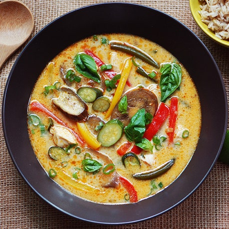

Lemongrass Coconut Curry
Home

Description
This versatile coconut curry recipe is incredibly easy to make vegetarian (using vegetable stock, omitting the chicken, not using fish sauce, etc.).
Ingredients
- Coconut Milk
- Protein of Choice
- Lemongrass
- Garlic
- Chili Flakes
- Onions
- Fry protein on high heat, for sealing and maillard effect
- Remove protein
- Fry aromatics on low heat to activate the flavours
- Add all ingredients together, slow cook duration depending on cut of protein